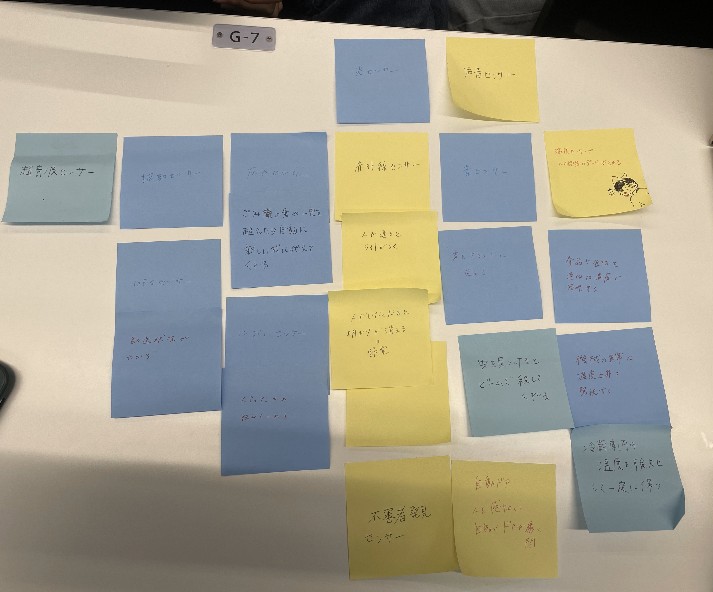
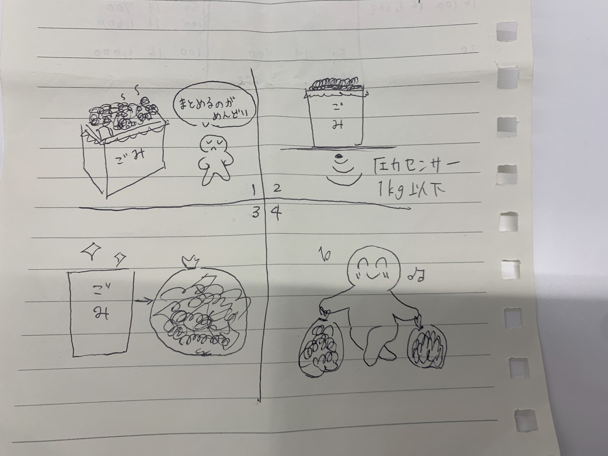

第3回
1.グループワークした内容（ポストイット画像）
まず、色々な種類のセンサーを挙げ、普段不便に感じてることを挙げたセンサーでどうにかできないか考えた。

2. 自分で考えたアイディア（スケッチ）
ゴミがたくさんになったら新しい袋に変えなければいけないのを不便に感じた。
➡圧力センサーによって一定の量を超えたら自動でごみをまとめ、新しいごみ袋を設置してくれる商品
➡新しいごみ袋になったことを知らせるセンサーがあれば、会社や大学などで使えて清掃員の負担を減らすことができる。
